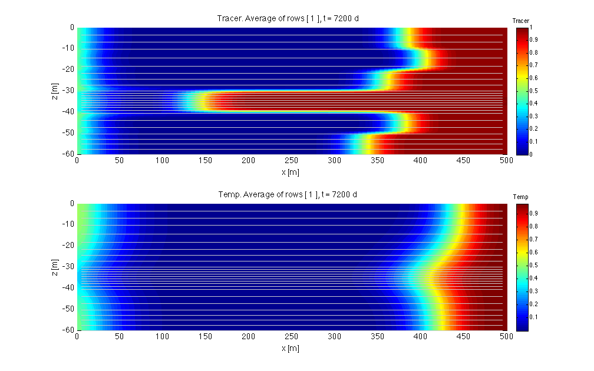
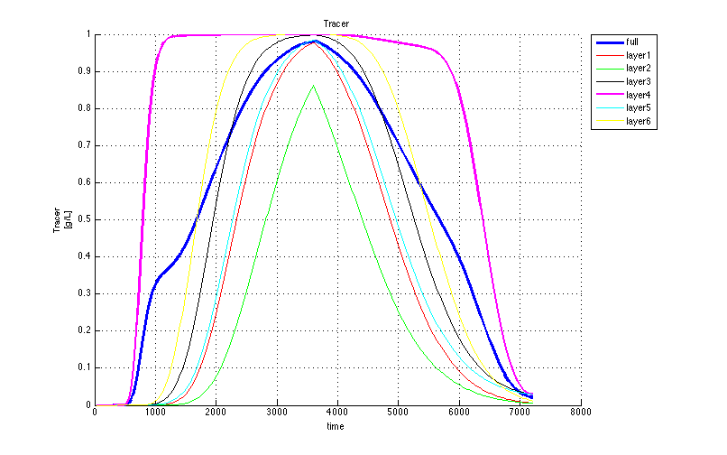
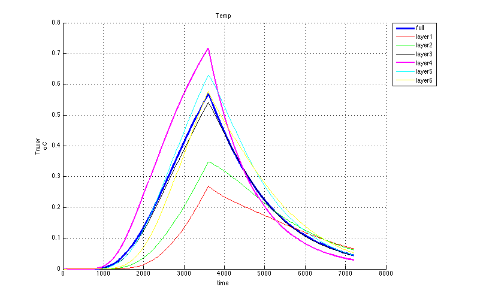

Visualization of steady model with transport of a tracer and temperature
Contents
- Close existing graphs and variables to prevent memory overflow
- The options and steps will be outlined here
- Retrieve the basename of this model
- Generate an animation object
- Simulate the concentration of all species
- Generate observation wells and install them in the grid.
- Plot observations of given species.
Close existing graphs and variables to prevent memory overflow
close all; clear variables;
The options and steps will be outlined here
We will use an animation to visualize the model results, followed by concentation and temperature breakthrough. Notice that there are many more visualization options.
Retrieve the basename of this model
load name % retrieve basename stored in file name.mat load(basename) % get model arrays that were saved by mf_setup load underneath % info from mf_adapt, contains the species names
Generate an animation object
The animation object created reads the simulated concentrations, the heads and budget (cell by cell flows). It needs the budget to draw the streamlines in the cross sections. Heads are only required if they are to be plotted.
animate = animateObj(basename,species,'head','budget');
animateObj: Reading HEADS from <<generic_steady_transport_xSec.HDS>> Reading MODFLOW binary output file <<generic_steady_transport_xSec.HDS>> verbose= 0 Scanning headers ..................................................5000 records read ......................finished, 7200 records scanned File contains the following: Number of records in file : 7200 Number of stress userPeriods: 240 Number of time steps : 1 Number of layers : 30 Number of rows : 1 Number of columns : 100 Maximum time in file " 7200 Reading requested data ... ..................................................iRecIn=5000 iRecOut=167 ...................... 7200 records read. . 240 records in output struct. animateObj: Reading CELL BY CELL FLOWS from <<generic_steady_transport_xSec.bgt>> Trying to read generic_steady_transport_xSec.BGT as BINARY file...it works! Scanning 960 headers .........finished, 960 records scanned File contains the following: Number of records in file: 960 Number of stress periods : 240 Number of time steps : 1 Number of layers : 30 Number of Rows : 1 Number of columns : 100 Number of unique labels : 4 CONSTANTHEAD FLOWLOWERFACE FLOWRIGHTFACE WELLS Reading the requested data ... Please wait while I'm getting the requested data ... ..................................................13 ..................................................25 ..................................................38 ..................................................50 ..................................................63 ..................................................75 ..................................................88 ..................................................100 ..................................................113 ..................................................125 ..................................................138 ..................................................150 ..................................................163 ..................................................175 ..................................................188 ..................................................200 ..................................................213 ..................................................225 ..................................................238 .......... 240 records in output struct. mf_Psi: Adding Psi along x-axis through row 1 to the budget struct animateObj: <<2>> components used for animation: <<Tracer>> <<Temp>> animateObj: Reading <<TRACER>> from <<MT3D001.UCN>> Reading MT3DMS binary output file <<MT3D001.UCN>> verbose= 0 Scanning headers... ..................................................5000 records read .........................finished, 7200 records read File contains the following: Number of records in file : 7200 Number of stress periods : 240 Number of time steps : 1 Highest time in file : 7200 Number of times in file : 240 Number of layers : 30 Number of Rows : 1 Number of columns : 100 ..................................................iRecIn=5000 iRecOut= 167 ...................... 7200 records read. . 240 records in output struct. animateObj: Reading <<TEMP>> from <<MT3D002.UCN>> Reading MT3DMS binary output file <<MT3D002.UCN>> verbose= 0 Scanning headers... ..................................................5000 records read .........................finished, 7200 records read File contains the following: Number of records in file : 7200 Number of stress periods : 240 Number of time steps : 1 Highest time in file : 7200 Number of times in file : 240 Number of layers : 30 Number of Rows : 1 Number of columns : 100 ..................................................iRecIn=5000 iRecOut= 167 ...................... 7200 records read. . 240 records in output struct.
Simulate the concentration of all species
animate.concXS(gr)
ans =
animateObj
Properties:
gr: [1x1 gridObj]
NCOMP: 2
STCONC: {[]}
basename: 'generic_steady_transport_xSec'
titleStr: {'Tracer' 'Temp'}
numberOfHeadContours: 50
numberOfConcContours: 50
numberOfStreamLines: 50
xLim: []
yLim: []
framerate: 3
quality: 75
time: [1x240 double]
H: [240x1 struct]
D: []
UCN: {[240x1 struct] [240x1 struct]}
t0: 0
B: [240x1 struct]
tscale: 1
tdim: 'd'
patch: []
psiMask: []
dateformat: 'dd/mmm/yyyy'
topfig: []
hrange: [1x37 double]
prange: [1x51 double]
crange: {[1x52 double] [1x51 double]}
drange: []
 Generate observation wells and install them in the grid.
obsWells = observationObj(basename,'observations',gr,HK,[species,'head']);
Reading MODFLOW binary output file <<generic_steady_transport_xSec.HDS>> verbose= 0 Scanning headers ..................................................5000 records read ......................finished, 7200 records scanned File contains the following: Number of records in file : 7200 Number of stress userPeriods: 240 Number of time steps : 1 Number of layers : 30 Number of rows : 1 Number of columns : 100 Maximum time in file " 7200 Reading requested data ... ..................................................iRecIn=5000 iRecOut=167 ...................... 7200 records read. . 240 records in output struct. Reading MT3DMS binary output file <<MT3D002.UCN>> verbose= 0 Scanning headers... ..................................................5000 records read .........................finished, 7200 records read File contains the following: Number of records in file : 7200 Number of stress periods : 240 Number of time steps : 1 Highest time in file : 7200 Number of times in file : 240 Number of layers : 30 Number of Rows : 1 Number of columns : 100 ..................................................iRecIn=5000 iRecOut= 167 ...................... 7200 records read. . 240 records in output struct. Reading MT3DMS binary output file <<MT3D001.UCN>> verbose= 0 Scanning headers... ..................................................5000 records read .........................finished, 7200 records read File contains the following: Number of records in file : 7200 Number of stress periods : 240 Number of time steps : 1 Highest time in file : 7200 Number of times in file : 240 Number of layers : 30 Number of Rows : 1 Number of columns : 100 ..................................................iRecIn=5000 iRecOut= 167 ...................... 7200 records read. . 240 records in output struct.
Plot observations of given species.
The color, order of the graphs and their lineWidths are obtained from the worsheet observations" in workbook basename. This worksheet name was given in the call of observationObj above.
% Plot break-through graphs of species 1, all observation wells obsWells.plot('fig',species{1},species{1},'ylabel',[species(1) ' [g/L]']); % same for species(2), i.e. the temperature. obsWells.plot('fig',species{2},species{2},'ylabel',[species(1) ' oC']); % finished. % TO 130614 